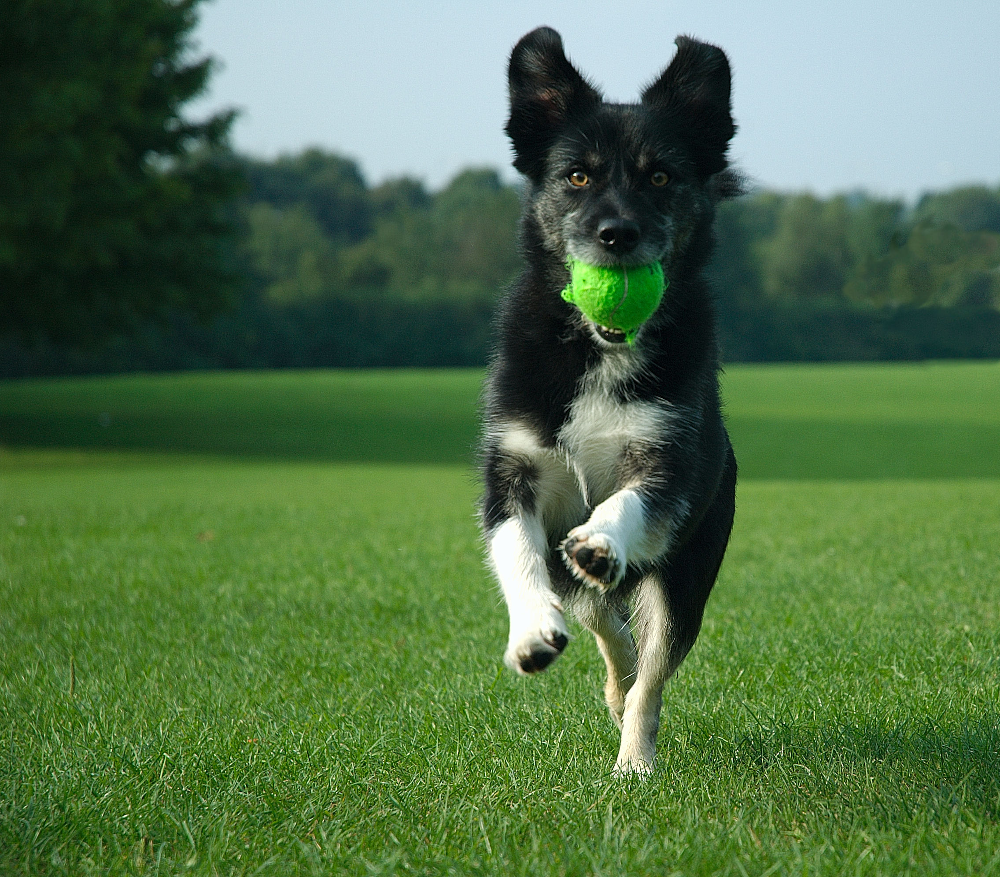

About Us
At Kingston Animal Rescue, our passion lies in rescuing and advocating for dogs in need. With a deep-rooted love for animals, especially dogs, we have dedicated ourselves to making a difference in their lives. Our mission is to rescue dogs from shelters, streets, and situations of neglect or abuse, providing them with a second chance at a happy and fulfilling life. We believe that every dog deserves love, care, and a forever home, and we work tirelessly to match them with loving families who will cherish and care for them. Our team consists of dedicated individuals who are committed to the well-being of dogs. From providing medical care and rehabilitation to offering training and support for adopters, we go above and beyond to ensure that each dog receives the attention and care they deserve. We also prioritize education and awareness about responsible pet ownership, promoting spaying/neutering, vaccinations, and proper training to create a safe and loving environment for dogs everywhere. Through our efforts, we aim to create a community of compassionate individuals who share our vision of a world where every dog is valued, loved, and cherished. Join us in our mission to rescue, rehabilitate, and rehome dogs, and together, we can make a meaningful difference in the lives of these wonderful animals.
Save A Life
